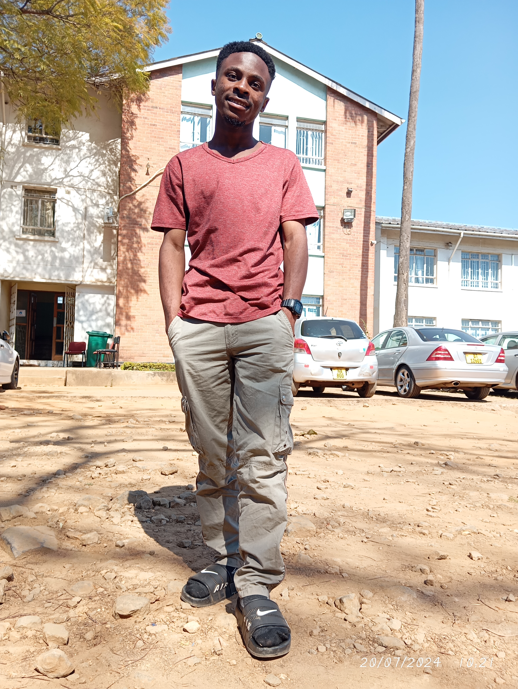

Praise kampira
HOME DISTRICT
My home district is Blantyer, Malawi. It is known for its rich cultural heritage and beautiful landscapes.
DATE OF BIRTH
I was born on 21St November 2004. This date holds a special significance for me as it marks the beginning of my journey in this world.
HOBBIES
In my free time, I enjoy reading books, Listening to music, and exploring nature. These activities help me relax and recharge.
FAVOURITE FOOD
My favorite food is rice and chicken. I love the combination of flavors and the comfort it brings.
FAVOURITE ANIME
My favorite movie is "One piece." It inspires me to persevere through challenges and never give up on my dreams.
More About Me
My name is Praise, and I am a software developer with a passion for creating innovative solutions. I have experience in various programming languages and frameworks, and I enjoy tackling challenging problems.
In my free time, I love to explore new technologies, work on personal projects, and contribute to open-source initiatives. I believe in the power of collaboration and continuous learning.
Feel free to connect with me on social media!
EDUCATION
My educational journey has been a significant part of my life, shaping my skills and knowledge. Here are the key milestones in my education:
EDUCATIONAL BACKGROUND
I have attended several educational institutions that have contributed to my growth and development:
-
Primary School(2010-2018)
attended Makata Primary School, where I developed a strong foundation in academics.
-
Secondary School(2018-2022)
I completed my secondary education at Ndirande Hill Secondary School, where I excelled in science and mathematics.
-
University(Currently)
Currently, I am pursuing a degree in Technical Education of Technology at the Malawi University of Business and Applied Sciences, where I am honing my skills in software development and technology.